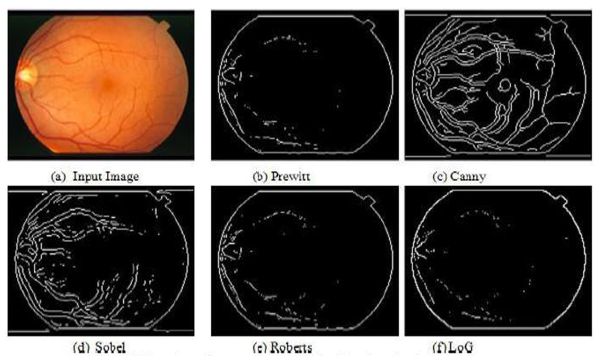

Introduction
Image segmentation is the division of an image into regions or categories, which correspond to different objects or parts of objects.
Every pixel in an image is allocated to one of a number of these categories.
A good segmentation is typically one in which:
- pixels in the same category have similar grey scale of multivariate values and form a connected region,
- neighboring pixels which are in different categories have dissimilar values.
Edge Based Image Segmentation
Edge-based segmentation is one of the most popular implementations of segmentation in image processing.
It focuses on identifying the edges of different objects in an image.
This is a crucial step as it helps you find the features of the various objects present in the image as edges contain a lot of information you can use.
Edge detection is widely popular because it helps you in removing unwanted and unnecessary information from the image.
It reduces the image’s size considerably, making it easier to analyse the same.
Algorithms used in edge-based segmentation identify edges in an image according to the differences in texture, contrast, grey level, colour, saturation, and other properties.
You can improve the quality of your results by connecting all the edges into edge chains that match the image borders more accurately.
Gradient
In image processing, a gradient refers to the rate of change of intensity in an image.
Mathematically, the gradient is a vector field that points in the direction of the greatest rate of increase of intensity and whose magnitude represents the rate of change in that direction.
For edge detection, we are primarily interested in regions of an image where there is a large change in pixel intensity—typically indicating the presence of an edge.
In image processing, a gradient refers to the directional change in the intensity or color
in an image. Mathematically, the gradient of an image function f(x, y) is a vector that
points in the direction of the greatest rate of increase off, and whose magnitude is the
rate of change in that direction:
Where:
- ∂f/∂x: the partial derivative in the horizontal direction (gradient in x-direction)
- ∂f/∂y: the partial derivative in the vertical direction (gradient in y-direction)
The magnitude of the gradient is given by:
And the direction (angle) of the gradient is:
Steps in Edge Detection
Algorithms for edge detection contain three steps:
- Filtering: Since gradient computation based on intensity values of only two points are susceptible to noise and other vagaries in discrete computations, filtering is commonly used to improve the performance of an edge detector with respect to noise. However, there is a trade-off between edge strength and noise reduction. More filtering to reduce noise results in a loss of edge strength.
- Enhancement: In order to facilitate the detection of edges, it is essential to determine changes in intensity in the neighborhood of a point. Enhancement emphasizes pixels where there is a significant change in local intensity values and is usually performed by computing the gradient magnitude.
- Detection: We only want points with strong edge content. However, many
points in an image have a nonzero value for the gradient, and not all
of these points are edges for a particular application. Therefore, some
method should be used to determine which points are edge points.
Frequently, thresholding provides the criterion used for detection.
Examples at the end of this section will clearly illustrate each of these steps
using various edge detectors.
Many edge detection algorithms include a fourth step: - Localization: The location of the edge can be estimated with subpixel resolution if required for the application. The edge orientation can also be estimated.
Edge Detectors
- First-order derivative
- Robert
- Sobel
- Perwitt
- Second-order derivative
- Laplacian
- Canny
- Morphological operations

Canny Edge Detector
The Canny edge detector is the first derivative of a Gaussian and closely approximates the operator that optimizes the product of signal-to-noise ratio and localization. The Canny edge detection algorithm is summarized by the following notation. Let I[i, j] denote the image. The result from convolving the image with a Gaussian smoothing filter using separable filtering is an array of smoothed data,
where σ is the spread of the Gaussian and controls the degree of smoothing. The gradient of the smoothed array S[i, j] can be computed using the 2 x 2 first-difference approximations to produce two arrays P[i,j] and Q[i, j] for the x and y partial derivatives:
The finite differences are averaged over the 2 x 2 square so that the x and y partial derivatives are computed at the same point in the image. The magnitude and orientation of the gradient can be computed from the standard formulas for rectangular-to-polar conversion:
where the arctan function takes two arguments and generates an angle over the entire circle of possible directions. These functions must be computed efficiently, preferably without using floating-point arithmetic. It is possible to compute the gradient magnitude and orientation from the partial derivatives by table lookup. The arctangent can be computed using mostly fixed-point arithmetic2 with a few essential floating-point calculations performed in software using integer and fixed-point arithmetic.
Comparison of Edge Detectors
| Edge Detector | Method | Advantages | Limitations |
|---|---|---|---|
| Roberts | Gradient Based |
|
|
| Sobel | Gradient Based |
|
|
| Prewitt | Gradient Based |
|
|
| Canny | Gaussian Based |
|
|